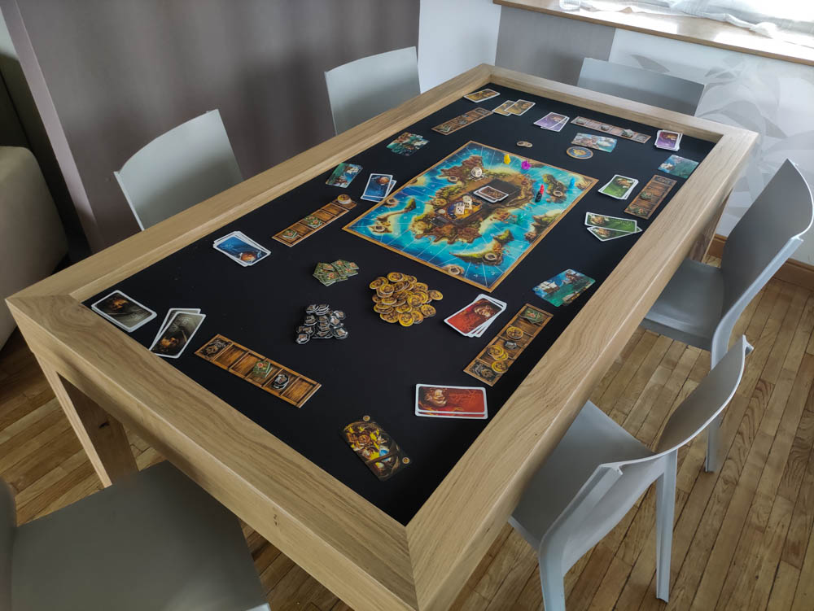
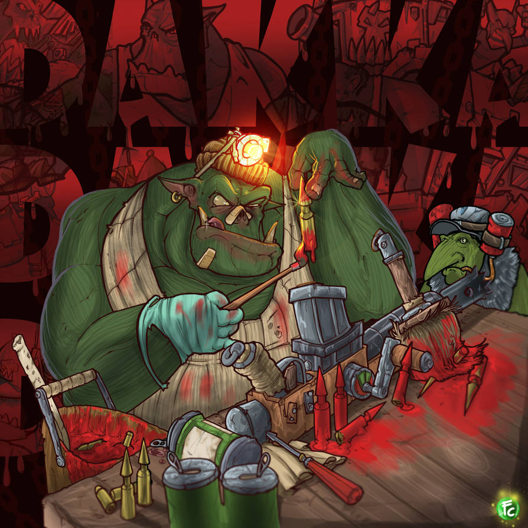

Franyó Krisztián
Mit tanultam eddig?
Célok: nyelv tanulás:Orosz, lengyel, Game design tanulása,- Orosz nyelvet 4 évig
- Python
- java
- Html
- javascript
Hobbijaim
- moddelezés/wargame
- Asztali szerepjáték
- filmek sorozatok
- társasjáték
- video játékok


